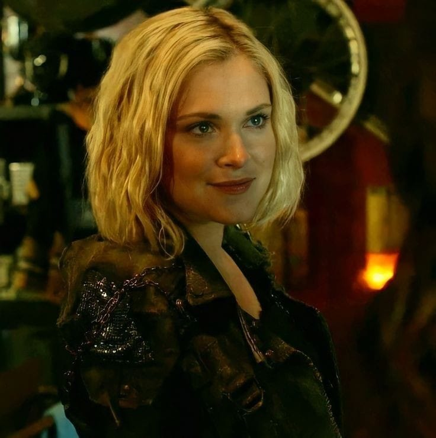
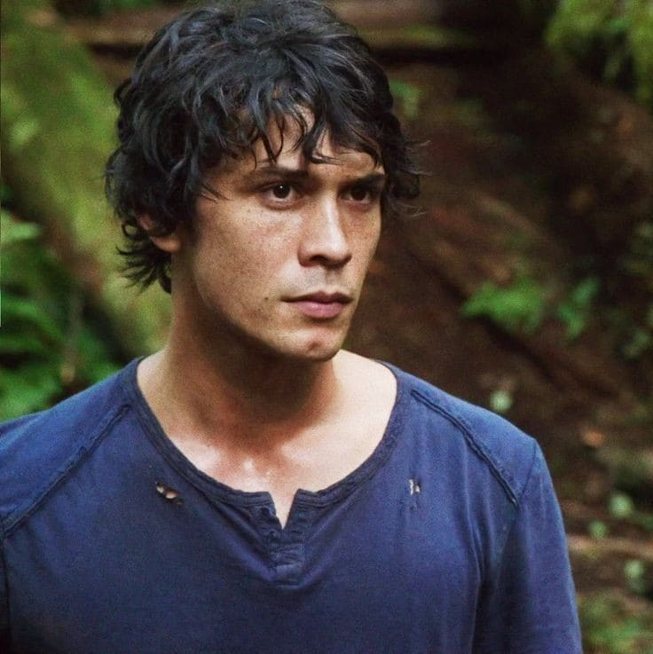
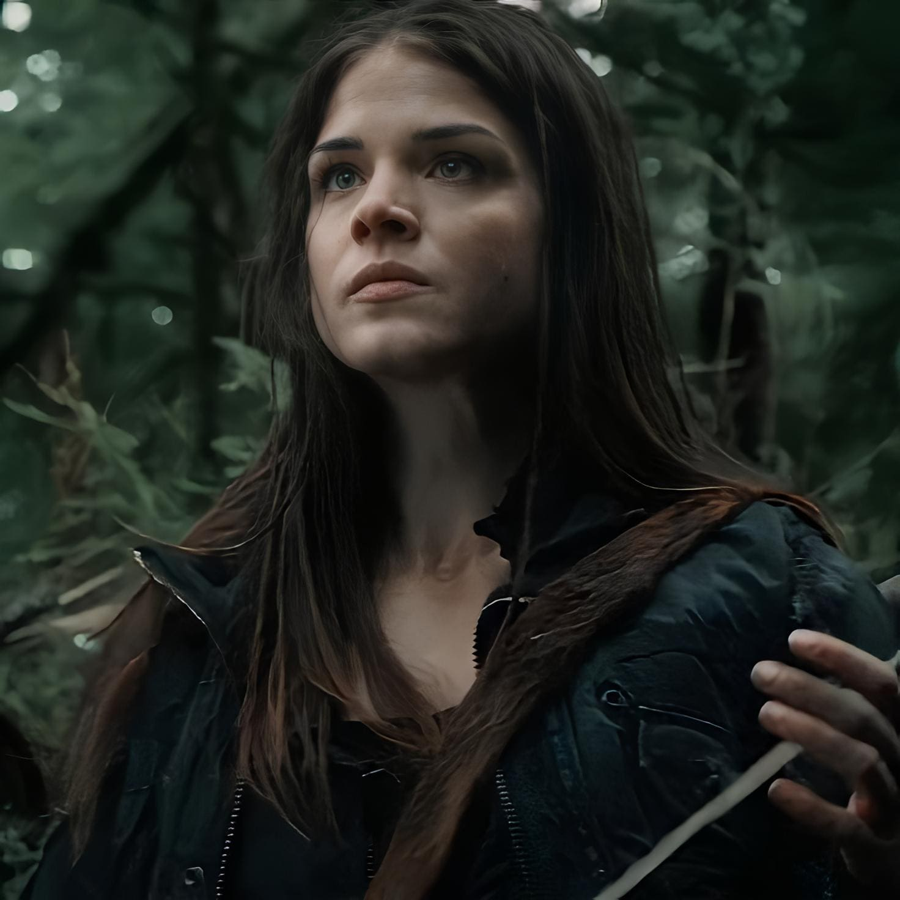

Clarke Griffin
Personagem principal, Líder nata e curandeira, Clarke é a moral compassiva do grupo,
enfrentando decisões difíceis com coragem e determinação, sempre lutando pelo bem de seu povo.

Bellamy Blake
Com um instinto protetor e uma forte liderança, Bellamy se destaca pela
lealdade aos seus entes queridos, equilibrando ação direta com momentos
de profunda reflexão moral.

Octavia Blake
De solitária a guerreira mais destemida e temida, Octavia se transforma
em uma figura icônica de força e resiliência, desafiando as normas e
criando seu próprio caminho de justiça.
Raven Reyes
Gênio mecânico e hacker brilhante, Raven combina sua inteligência aguçada
com uma força inabalável, superando adversidades físicas e emocionais
com tenacidade e engenhosidade.
Jasper Jordan
Com seu humor e otimismo, Jasper traz leveza aos momentos tensos,
mas sua jornada é marcada por desafios emocionais profundos, refletindo
a fragilidade psicologica e a força diante da adversidade.
Monty Green
A alma gentil e o gênio em engenharia do grupo, Monty se destaca por sua
moral inabalável e inovações brilhantes, sempre priorizando o bem-estar
coletivo e a sustentabilidade do ambiente.
John Murphy
Inicialmente um sobrevivente solitário com tendências anti-heroicas,
Murphy evolui para um personagem complexo, cuja resiliência e capacidade
de sobrevivência o tornam inesperadamente valioso e leal.
Lexa
Líder carismática e poderosa dos Grounders, Lexa é a comandante e uma estrategista e
guerreira formidável, cujo senso de dever e integridade molda sua liderança,
enquanto luta para equilibrar coração e mente diante de alianças e conflitos.